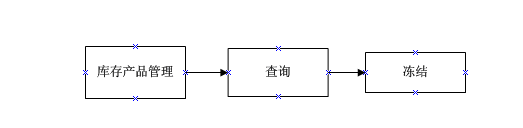
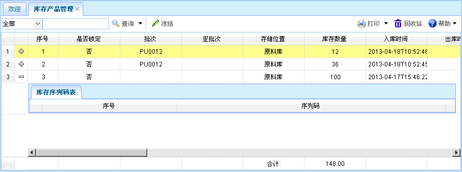

库存产品管理
库存产品管理
一、概述：库存产品管理，可以对库存中的产品信息进行查询和冻结操作。
二、流程图演示：如下图所示。

图表【流程图】
图表【流程图】
三、功能介绍：点击【库存产品管理】，进入库存产品管理页面，并可以查看其库存序列码表信息。 如下图所示。功能主要包括：查询、冻结。

图表4-15-1【库存产品管理】
图表4-15-1【库存产品管理】
【查询】：通过设置查询条件，查询出符合条件的数据，直接点击查询按钮即可列出相关信息。
【冻结】：选择某个库存产品信息后，点击冻结，即可冻结该库存产品信息。